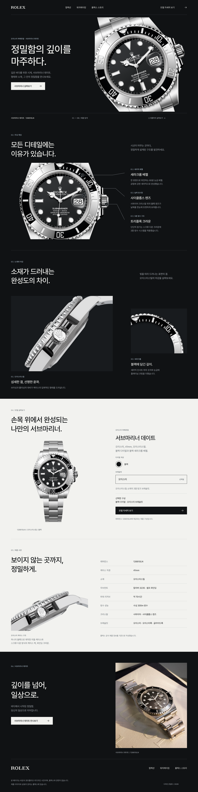

디자인 구성
롤렉스 서브마리너 데이트 126610LN을 중심으로 구성한 1440 × 5760px 데스크톱 UI 디자인입니다. 이미지 안의 메뉴, 버튼과 선택 옵션은 정적 표현입니다.
- 정밀함의 깊이를 마주하다 — 제품의 첫인상.
- 모든 디테일에는 이유가 있습니다 — 베젤, 날짜 표시와 크라운 탐색.
- 소재가 드러내는 완성도의 차이 — 오이스터스틸과 다이얼의 마감.
- 손목 위에서 완성되는 나만의 서브마리너 — 블랙 다이얼과 오이스터 브레슬릿.
- 보이지 않는 곳까지, 정밀하게 — 무브먼트와 케이스 등 제품 사양.
- 깊이를 넘어, 일상으로 — 마지막 제품 장면과 브랜드 메뉴.